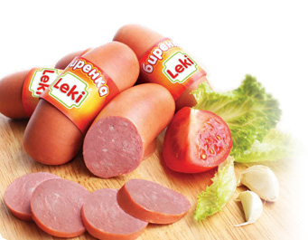

За марката LEKI
Марката LEKI е на пазара от 2004 г. и през годините от създаването си се налага като една от най-успешните марки в България. В сърцевината на ценностната система на продуктите LEKI е високото качество на достъпна цена за масовия потребител. Изискванията, желанията и потребностите на потребителите са водещ приоритет в политиката на LEKI.
“Белла България” АД е вложила много в изграждането на едни от най-модерните съоръжения за производство на тези продукти, за да може да гарантира на потребителите постоянно и добро качество.
Продуктовата гама на марката LEKI се развива изключително динамично и към настоящия момент включва добре познатите на всички
потребители Кренвирши LEKI (класически и пражки), Македонска наденица, Лионска наденица, колбаси Телешки, Хамбургски и Камчия, пастет, Шунки LEKI Класик и Пуешка. В групата на трайните колбаси изключително успешно се продават класическия шпек LEKI, шпек LEKI Бургас и шпек LEKI Сервилат. Най-новите продукти под марката са продукти за скара от мляно месо и кайма „Балканска скара” LEKI .
Любопитно:
Според класацията на 20-те най-влиятелни марки на пазара в България за 2005 година на агенцията за маркетингови проучвания Synovate (част от независимия холдинг Aegis) LEKI се нарежда на 20-та позиция. Класация е направена и за най-запомнените български марки за 2005 година, в която LEKI се нарежда на второ място